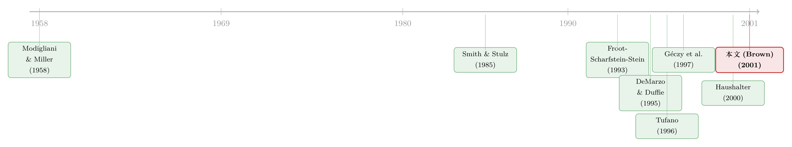

对冲，不是一道选择题，而是一台『内部汇率』机器
本文读的是 Brown (2001, Journal of Financial Economics)：作者在一家美国耐用设备制造商（化名 HDG）的财务部里蹲了三个月，逐笔扒下了 3,110 笔外汇衍生品交易。结论很扎心——课本上那些「为什么要对冲」的标准答案（避税、躲开财务困境）几乎都对不上号；HDG 真正在乎的，是信息不对称、内部契约的顺滑、以及产品的竞争性定价。而「怎么对冲」这件事，最后全都收敛到一个被精心管理的数字上：hedge rate。
1 引言：一扇一直关着的门
关于公司对冲（corporate hedging），金融学其实已经写了几十年。问题在于，我们写来写去，写的几乎都是同一类问题：哪些公司更爱用衍生品？大公司比小公司更爱用（Dolde, 1995），成长机会多的更爱用（Nance et al., 1993；Géczy et al., 1997），杠杆高的更爱用（Wall and Pringle, 1989）。这些都是横截面的回归，是站在公司外面、隔着财报和披露数据去猜。
可是，一家公司具体是怎么对冲的？它在哪个季度、对哪种货币、用远期还是用期权、对冲到敞口的百分之几——这扇门，几乎从来没人推开过。原因也不难理解：这些数据是公司treasury部门内部最敏感的东西，外人根本拿不到。
于是就有了这篇论文的与众不同之处。1998 年春天，作者花了大约三个月，住进了 HDG 的财务部，旁观它每天怎么做外汇风险决策，和treasury人员、高管反复交谈，翻内部备忘录，并把 1995:Q1 到 1998:Q2 这 14 个季度里全部 3,110 笔外汇衍生品交易一笔一笔抄了下来。HDG 是一家在 50 多个国家有销售、1997 年毛收入超过 100 亿美元的耐用设备龙头，外销占了将近一半；光是 1997 财年末，外汇衍生品的名义价值（notional value）就有大约 30 亿美元，全年交易名义额超过 150 亿美元。
这不是一篇做回归找系数的论文。它是一次解剖。作者想回答三个朴素的问题：HDG 怎么搭 它的对冲程序？它为什么要对冲？它又具体怎么执行每一笔对冲？
2 一个核心：被「制造」出来的 hedge rate
如果要我把整篇文章拧成一句话，那一定是这一句：HDG 的整个外汇对冲程序，是围绕一个叫 hedge rate 的内部汇率运转的。
什么是 hedge rate？它不是市场上任何一个真实可交易的汇率。它是treasury部门人为算出来、然后下发给各个海外业务单元（international business unit, IBU）的一个「锁定汇率」，用来做事前的预算、销售目标、战略决策，也用来做事后的业绩评价与报告。换句话说，公司内部所有跟外币现金流有关的计划与考核，用的都不是真实市场汇率，而是这个被treasury「制造」出来的 hedge rate。
理解了这一点，你就理解了 HDG 的一切看似奇怪的做法。
比如，HDG 从不把外汇敞口跨季度、跨货币、跨地区加总。同一时点，光是日元（JPY），它就可能同时挂着最多五个独立的对冲：当前季度一个，未来四个季度各一个。每一个 currency-quarter 都有自己单独的 hedge rate。从纯交易成本的角度看，这显然是「笨」的——用一篮子期权（basket option）一次性对冲多种货币本该更便宜。可 HDG 偏不。为什么？
因为篮子期权算不出一个干净的、能下发给单个业务单元去做预算的 hedge rate。一旦目标变成「让 hedge rate 好用」，单币种、可拆分、会计处理清楚的衍生品就成了首选——哪怕它更贵。
这就是这篇论文最迷人的地方：「怎么对冲」的种种细节，并不是从风险最小化推出来的，而是从「让那个内部汇率好用」这个目标倒推出来的。
3 为什么对冲：三条课本里没有的理由
接着，一个自然的问题是：HDG 到底为什么要这么大费周章地对冲？
先看课本怎么说。从 Modigliani and Miller (1958) 那个无摩擦世界出发，对冲本该是无关紧要的——股东自己就能分散汇率风险。后来的理论给对冲找了几个「摩擦」做理由：Smith and Stulz (1985) 系统地论证了对冲能降低期望税负、降低财务困境成本、缓解管理层的风险厌恶；Froot, Scharfstein, and Stein (1993) 则给出了一个更现代的理由——对冲是为了协调投资与融资，避免现金流不够时被迫放弃好项目。
可作者在 HDG 待了三个月，得到的观察是：这些传统解释，没有一个抓住 HDG 的主要动机。 避税？躲财务困境？都不是treasury每天真正操心的事。
那他们操心什么？作者归纳出三条更微妙的理由：
第一，信息不对称（information asymmetries）。 对冲掉汇率这个「噪声」，能让投资者和管理层更清楚地看到公司真实的经营表现——这一点呼应了 DeMarzo and Duffie (1991, 1995) 关于对冲与信息、与会计处理的理论。
第二，便利内部契约（facilitation of internal contracting）。 这正是 hedge rate 的用武之地。有了一个锁定的内部汇率，海外业务单元的经理就可以在一个不受汇率波动干扰的基准上被考核——他们的功过，不会因为日元这个季度多跌了 3% 就被冤枉或被高估。对冲在这里不是为了「省钱」，而是为了让公司内部的激励和评价系统能正常运转。
第三，竞争性定价（competitive pricing）。 HDG 在一个竞争极其激烈、技术驱动的行业里，对冲让它在为产品定价时有一个稳定的成本/收入基准，不至于因为汇率乱跳而在价格战里乱了阵脚。
注意，这三条理由，恰恰都不是「在金融市场上赚一笔」，而是关于公司内部如何运转、以及如何对外竞争。这也是为什么作者反复强调：即便有了这份近乎完美的全样本交易数据，你依然很难证明对冲「增加了公司价值」——这一点，和过去那一堆横截面研究的结论是一致的：一个单一、清晰、价值最大化的对冲政策，并不存在。
（关于「公司到底应该怎么对冲、对冲多少才对」这个规范性问题，作者后来和 Toft 专门写了一篇理论文章，可参见《对冲的下半场：不是「要不要」，而是「怎么对冲」》；而「公司用衍生品到底对冲掉了多少风险」这个尴尬的实证小数，则可参见《公司到底用衍生品对冲了多少风险？》。）
4 怎么对冲：对 put 期权的偏爱，与半截子的解释力
然后，是「怎么对冲」的细节。作者用 14 个季度的逐笔数据，去解释对冲组合的特征——名义价值、delta、gamma 等等。
最显眼的一个事实：HDG 强烈偏好用买入看跌期权（purchased put options）来对冲。 为什么是 put，而不是更便宜的远期？两个原因：一是更有利的会计处理（期权能拿到保证的套期会计待遇，hedge rate 的计算里就专门用平价期权做基准，为的是让流程「客观」）；二是前面说过的竞争性定价考量。
其他影响对冲组合形态的因素还包括：汇率波动率、底层敞口的波动率、可能与「市场观点」有关的技术性因素、以及最近几次对冲的盈亏结果。这里有个有意思的细节——政策对对冲比例（hedge ratio，名义价值占敞口的百分比）划了明确的上下限，而且离敞口实现越近，最低对冲比例越高：
| 预期距敞口实现 | 最低对冲(%) | 最高对冲(%) |
|---|---|---|
| 当前季度 | 60 | 90 |
| 1 个季度 | 40 | 90 |
| 2 个季度 | 25 | 85 |
| 3 个季度 | 0 | 85 |
| 4 个季度 | 0 | 85 |
但真正关键、也最诚实的一句话在这里：作者承认，所有这些能解释对冲行为的因素加在一起，顶多也只能解释 hedge ratio 一半的变异（at best, only half the variation）。 另一半，仍是黑箱。这不是论文的失败，恰恰是它的贡献——它用最干净的全样本数据告诉后来者：我们对「公司如何执行对冲」的理解，还差得远。
5 hedge rate 的算术：一个被悄悄植入的「缓冲」
最后，让我们把 hedge rate 这个核心概念，拆到它的算术层面——因为魔鬼正藏在这里。
hedge rate 的定义是：已有头寸的有效对冲汇率，乘以已对冲比例；加上，把剩余敞口补到 100% 所需的平价期权全额成本（all-in cost），乘以未对冲比例。 写成一个公式：
来看作者给的那个德国马克（German Mark, DEM）的例子：当前即期 1.6617，远期 1.6517；已经入场的衍生品名义价值等于预测敞口的 71%，有效对冲汇率 1.6258；把对冲补到 100% 所需的平价远期期权成本是 0.0220。代进去：
$$ H = 0.71 \times 1.6258 + 0.29 \times (1.6517 + 0.0220) = 1.6397 $$
现在是真正关键的一步。作者敏锐地指出：这个算法把期权成本 \(c\) 算进了 hedge rate，是有偏的。 如果衍生品定价公允，那么在风险中性下，期权净收益的期望是零——期权成本根本不应该进入这个汇率的计算。剔掉它，「风险中性的 hedge rate」应该是：
$$ H^{rn} = 0.71 \times 1.6258 + 0.29 \times 1.6517 = 1.6333 $$
1.6397 对 1.6333，差了大约 0.0064。对于一个净的正向外币敞口（HDG 收外币、换美元），更高的 hedge rate 意味着更低的预期美元收入。也就是说，这套算法系统性地把内部计划往「保守」的方向偏。
于是反转出现了：这个偏差，treasury managers 不仅知道，而且喜欢。他们把它叫做「期望正方差」（expected positive variance），认为这是 hedge rate 一个值得拥有的属性——因为 hedge rate 随市场汇率浮动，这个偏差就成了一个「缓冲垫」（buffer），用来吸收那些没对冲到的、不利的市场波动。
你看，连一个最不起眼的会计算法里，都藏着系统性的、被有意保留的偏差。对冲在 HDG 这里，从来就不是一道追求「最优」的数学题，而是一台服务于内部管理的、带着人为缓冲的机器。
6 文献脉络
把这篇论文放回它所在的研究长河里，脉络就清晰了。
起点是 Modigliani and Miller (1958) 的无关性命题——在完美市场里，对冲不创造价值。要让对冲有意义，就得引入摩擦。Stulz (1984)、Smith and Stulz (1985) 奠定了「为什么对冲」的理论基石：税、财务困境、管理层风险厌恶。接着，Froot, Scharfstein, and Stein (1993) 给出了「协调投资与融资」这条更现代的理由，而 DeMarzo and Duffie (1991, 1995) 则把信息与会计处理引入对冲动机。

理论之后是实证。Nance, Smith, and Smithson (1993) 与 Géczy, Minton, and Schrand (1997) 做横截面，问「哪些公司用衍生品」；Tufano (1996) 在金矿行业里发现管理层激励与任期才是关键，把这条线推向了「谁在管理风险」；Haushalter (2000) 在油气行业里却发现这些结果并不稳健。再加上 Bodnar, Hayt, and Marston (1998) 的 Wharton 问卷调查、Lewent and Kearney (1990) 对 Merck 的实务描述——整条线索都在「外部观察」。
而本文 Brown (2001) 的位置，恰恰是这条线索上一直缺的那一块：它不在外面猜，而是走进treasury部门，用全样本逐笔数据，第一次系统地回答了「一家公司具体怎么对冲、为什么这么对冲」。它的贡献不是给出一个新系数，而是提出新的机制、并为后来的横截面研究列出可检验的具体问题。
7 评论与延伸（Q&A + 研究方向）
(a) 几个可能的疑问
Q：只研究一家公司（N=1），结论能推广吗？
不能、也不该当成可推广的统计结论。这是一篇 field study，它的价值在于「发现机制」而非「估计总体参数」。作者很诚实：他要做的是用一个深度个案，提出此前文献没注意到的新机制（信息不对称、内部契约、竞争定价、hedge rate 的缓冲偏差），并把它们整理成后续大样本研究可以去检验的假设。把它当成假设的「源头」，而不是检验的「终点」。
Q：HDG 说的「economic exposure」和学界说的是一回事吗？
不是，这是个容易误读的点。学界通常把 economic exposure 定义为宏观冲击、竞争、战略层面对公司价值的长期风险。而 HDG 口中的 economic exposure，主要是「已预期但尚未签约承诺」的现金流（预期销售、采购、运营开支、第三方销售）。在合约周期更长的行业，这些在 HDG 会被归为 transaction exposure。所以 HDG 的 economic exposure，落在学界「经济敞口」与会计「交易敞口」之间。
Q：为什么偏好 put 期权，而不是更便宜的远期合约？
主要不是因为 put「更能避险」，而是因为它在 HDG 的运转逻辑里更顺手：一是会计上能拿到有保证的套期会计待遇，hedge rate 计算就用平价期权做客观基准；二是出于竞争性定价的考量。这再次说明，「怎么对冲」是被「让内部系统好用」这个目标驱动的。
Q：hedge rate 里那个偏差，是不是treasury在「赚价差」或粉饰业绩？
不是赚价差——它来自把公允定价的期权成本算进了汇率，在风险中性下期权净收益期望为零，所以那只是一个会计口径的保守化，而非真实盈利。它确实会让内部预算偏保守（对净多头外币敞口，预期美元收入被压低），treasury明知道并刻意保留，把它当成对冲不足时的缓冲垫。这是一种制度化的审慎，而非操纵。
Q：既然连一半的对冲行为都解释不了，这篇论文的「解释力」是不是太弱？
「只能解释一半」本身就是一个有信息量的结论。它是在告诉整个领域：我们对企业执行层面的对冲，理解还很初级。在此之前，连「有一半解释不了」这种话都没人有数据资格说。承认无知的边界，本身是贡献。
Q：这对「对冲是否增加公司价值」这个长期争论意味着什么？
它泼了一盆冷静的水。即便有近乎理想的全样本交易数据，作者依然无法干净地证明对冲提升了公司价值。这与此前横截面研究的总体印象一致：不存在一个单一、清晰、价值最大化的对冲政策。但它换了一个更有建设性的问法——别再纠结「对冲是否值钱」，去看「对冲如何嵌入公司的信息、契约与竞争」。
(b) 几个可能的研究问题与提案
1. 把 hedge rate 的「内部汇率」逻辑搬到公司债 / 外币计价负债上。 - 【经济故事】HDG 围绕一个内部汇率组织外汇对冲；那么发行外币债的跨国公司，是否也存在一个内部「锁定利率/汇率」，用来在各业务单元间做资本成本考核？若有，这会系统性地扭曲内部投资决策。 - 【可行性】中。难点是拿到企业内部转移定价数据；可退而求其次，用外币债发行 + 利率/货币掉期的披露数据，间接刻画企业的「内部对冲基准」。
2. 外资持有人结构与企业外汇对冲强度。 - 【经济故事】若对冲的核心动机之一是降低信息不对称、让外部投资者看清经营，那么外资持有比例更高的公司（信息不对称往往更严重），是否对冲得更彻底？ - 【可行性】高。可用各国持股数据 + 衍生品披露做横截面/面板，识别上可借助指数纳入、可投资度（investability）变化等外生冲击。
3. 对冲会计准则变更，作为「怎么对冲」的自然实验。 - 【经济故事】本文反复强调会计处理在「选 put 还是选远期」中的决定性作用。SFAS 133 等套期会计准则的引入/修订，正好提供了一个外生冲击，看企业是否真的因为会计待遇而切换工具。 - 【可行性】高。准则生效日清晰，可做事件研究 / 双重差分（difference-in-differences, DiD），数据来自衍生品披露。
4. 对冲与公司债信用利差：缓冲垫真的被债权人定价了吗？ - 【经济故事】HDG 的 hedge rate 里有意保留一个保守缓冲。若对冲降低了现金流波动，债权人应当在信用利差里给予折让。 - 【可行性】中高。可在外汇敞口大的发行人样本里，把对冲强度与二级市场利差对接，控制基本面后看定价。可与《对冲的下半场》的规范结论相互印证。
5. 「只能解释一半」的另一半是什么？ - 【经济故事】本文留下的最大悬念：hedge ratio 还有一半变异无法解释。是否来自treasury人员的个体异质性（任期、经验，呼应 Tufano 1996）、近期盈亏带来的行为偏差、还是市场观点？ - 【可行性】中。需要企业内部人事 + 逐笔交易数据的匹配，门槛高；但若能复制本文这类 field access，可直接检验「最近对冲盈亏」是否预测下一期对冲比例。
参考文献
- Modigliani, F., Miller, M. (1958). The cost of capital, corporation finance, and the theory of investment. American Economic Review 48, 261–297.
- Stulz, R. (1984). Optimal hedging policies. Journal of Financial and Quantitative Analysis 19, 127–140.
- Smith, C., Stulz, R. (1985). The determinants of firms' hedging policies. Journal of Financial and Quantitative Analysis 20, 391–402.
- DeMarzo, P., Duffie, D. (1991). Corporate financial hedging with proprietary information. Journal of Economic Theory 53, 261–286.
- Nance, D., Smith, C., Smithson, C. (1993). On the determinants of corporate hedging. Journal of Finance 48, 267–284.
- Froot, K., Scharfstein, D., Stein, J. (1993). Risk management: coordinating corporate investment and financing policies. Journal of Finance 48, 1629–1658.
- DeMarzo, P., Duffie, D. (1995). Corporate incentives for hedging and hedge accounting. Review of Financial Studies 8, 743–771.
- Tufano, P. (1996). Who manages risk? An empirical examination of risk management practices in the gold mining industry. Journal of Finance 51, 1097–1137.
- Géczy, C., Minton, B., Schrand, C. (1997). Why firms use currency derivatives. Journal of Finance 52, 1323–1354.
- Bodnar, G., Hayt, G., Marston, R. (1998). 1998 Wharton survey of financial risk management by US non-financial firms. Financial Management 27, 70–91.
- Haushalter, G. (2000). Financing policy, basis risk, and corporate hedging: evidence from oil and gas producers. Journal of Finance 55, 107–152.
- Brown, G. W. (2001). Managing foreign exchange risk with derivatives. Journal of Financial Economics 60(2–3), 401–448.